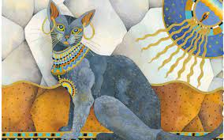
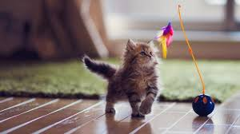
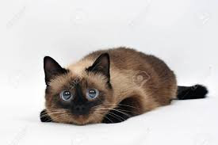
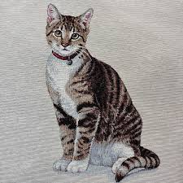
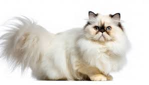

Anatomía Felina
👁️ Órganos Sensoriales
- Ojos: Visión nocturna superior
- Oídos: Detectan ultrasonidos
- Bigotes: Sensores de movimiento
🦴 Estructura Ósea
- 230 huesos (humano: 206)
- Columna vertebral extremadamente flexible
- Clavículas flotantes
💪 Fisiología
- Temperatura corporal: 38-39°C
- Ritmo cardíaco: 140-220 lpm
- Respiración: 20-30 rpm
Historia y Evolución
📜 Orígenes
Los gatos domésticos descienden del gato salvaje africano (Felis silvestris lybica). Su domesticación comenzó en el Creciente Fértil cuando los humanos se establecieron en comunidades agrícolas.
🏺 Culturas Antiguas
- Egipto: Considerados sagrados
- Roma: Símbolo de libertad

Representación de gatos en el arte antiguo
Mitos y Realidades
❌ Mito
Los gatos siempre caen de pie
✅ Realidad
Tienen reflejo de enderezamiento pero pueden lastimarse en caídas cortas
❌ Mito
Odian el agua
✅ Realidad
Algunas razas (como el Turco Van) disfrutan nadar
❌ Mito
Son animales solitarios
✅ Realidad
Forman colonias y tienen complejas relaciones sociales
Galería Felina

Gato juguetón
Gato durmiendo

Gato curioso

Gato atigrado

Gato siamés

Gato persa